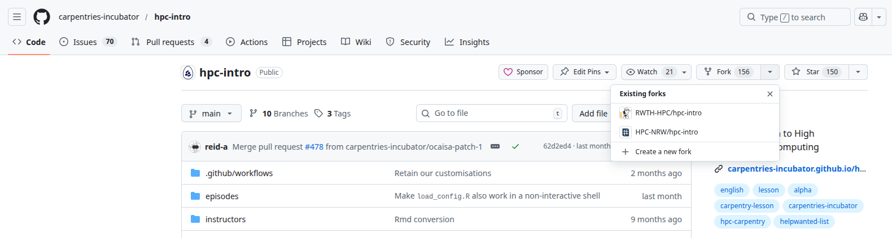
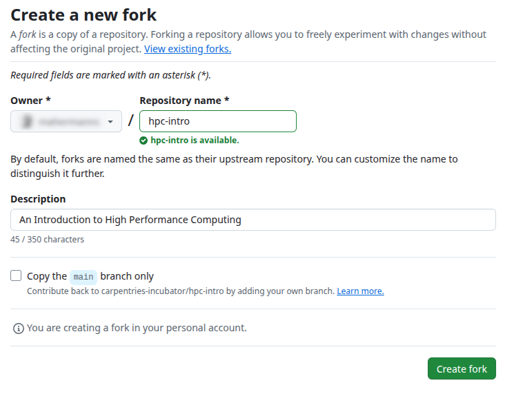
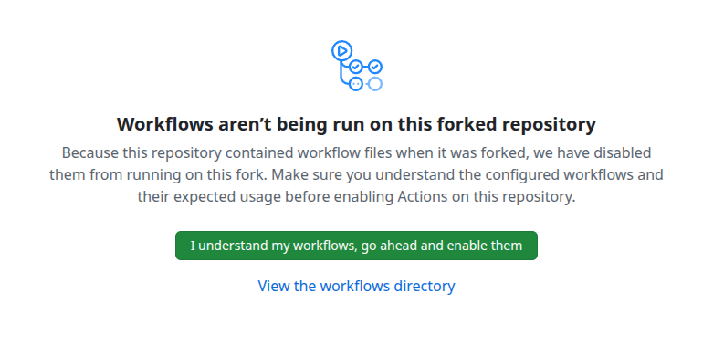
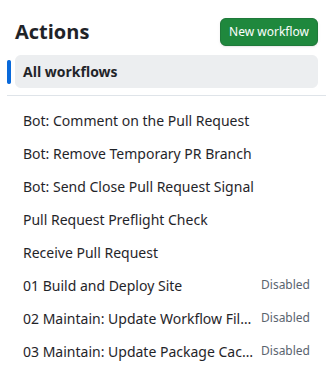
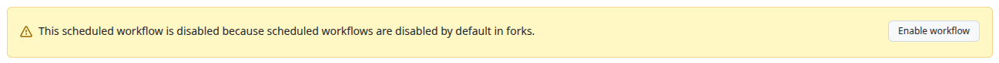
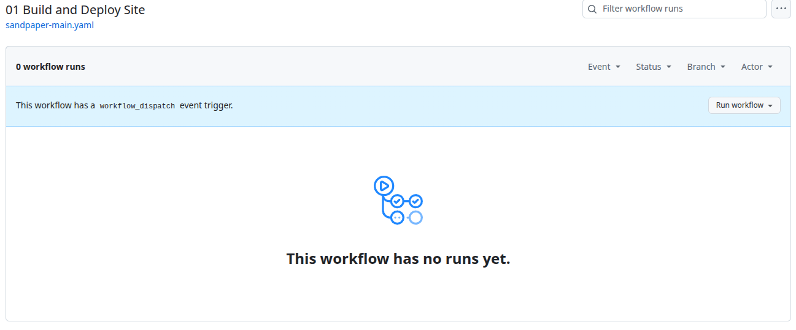
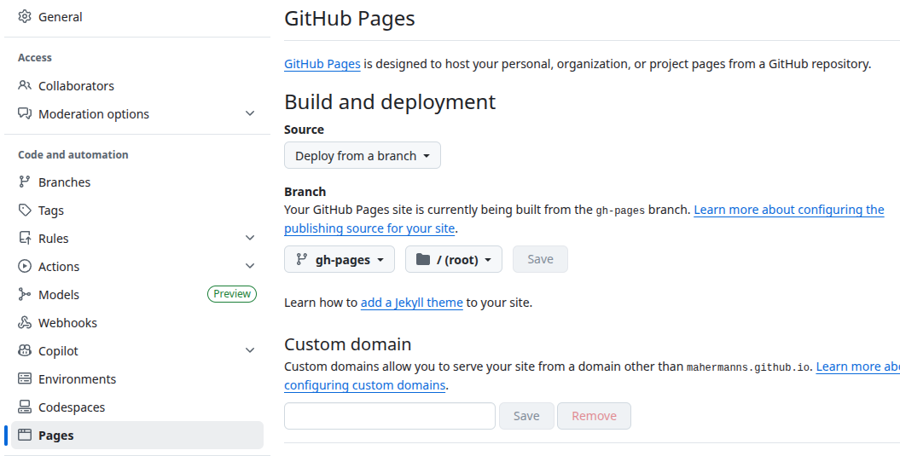
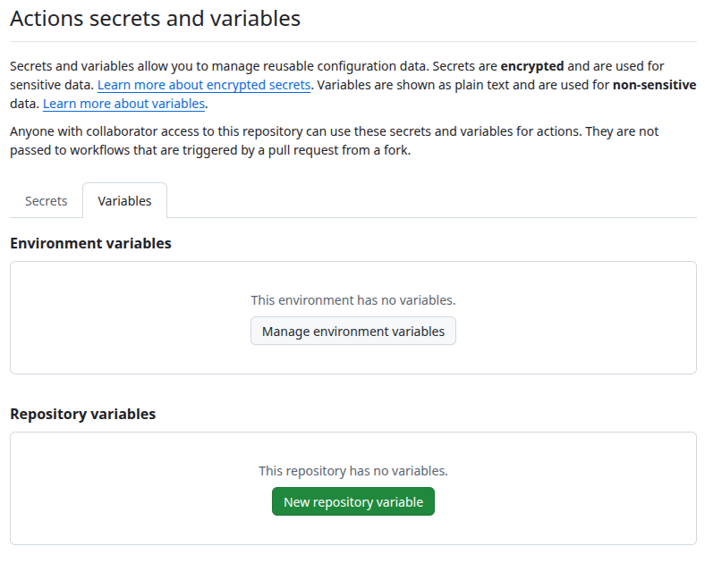
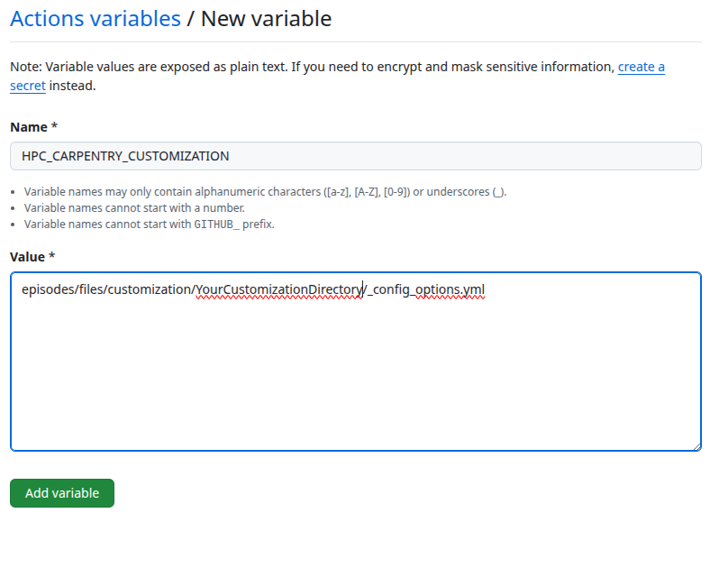

Content from HPC Carpentry Curriculum
Last updated on 2026-03-02 | Edit this page
Estimated time: 12 minutes
Overview
Questions
- What do we intend to convey through our workshops?
- What tools do we use?
- What do we cover, and intentionally not cover?
Objectives
- Understand the intentions of the HPC Carpentry lesson program.
- Use the tooling adapted by the HPC Carpentry.
- Learn the scope of the HPC Carpentry curriculum.
The HPC Carpentry Curriculum
Currently, the expected model of an HPC Carpentry workshop is a two-day event during which three lessons will be taught. The three lessons are the Software Carpentry Unix Shell lesson, and the HPC Intro and HPC Workflow lessons from the HPC Carpentry project itself.
As with all Carpentries materials, workshop organizers may wish to add or remove lessons, depending on the needs of their learners. For example, your community may already be familiar with the shell, or have had it in other workshops, in which case it can be omitted from the HPC Carpentry workshop.
An exception to this is the HPC Workflow lesson, which builds on
material covered in the HPC Intro lesson, and shares a model executable,
the amdahl code, with it. Workshop organizers may find that
the HPC Workflow lesson does not stand alone especially well, although
of course the project would be interested in your feedback if you
attempt this.
Intended Audience
The model HPC Carpentry workshop is intended for novice users of HPC systems. We assume that the learners are in some technical field, and have a requirement to run computations on systems larger than their laptops, but lack the skills to use these systems effectively.
Pedagogical Notes
A major feature of the HPC Carpentry lessons are two deviations from what might be considered pedagogical best practice.
The first of these is the “jargon buster” presentation early in the HPC Intro lesson. This presentation does not have any exercises or hands-on component to help with learner retention, but the development team has nevertheless found it to be valuable in clarifying HPC terminology, which uses some technical terms interchangeably (“node”, “computer”), and uses some ordinary English words in a more narrow technical sense (“server”, “thread”).
The second of these is the use of the amdhal executable
for demonstrating both parallel execution, and diminishing returns to
increasing parallelization. In the lessons, this program is a “black
box”, and the way it is constructed is not interrogated. Generally
speaking, it’s good practice to not have unexplained or magical-seeming
entities in lesson materials, but in this case, the development team’s
experience has been that attempting to explain how MPI executables are
coded imposes a high cognitive burden on novice HPC users, and distracts
significantly from the lesson goals.
Instructional Themes
The first major focus of the workshop is the mechanics of working on an HPC cluster. This includes conceptual items, such as the fact that the cluster log-in node is remote from the user’s laptop, and that when jobs run on the cluster, they do so at an additional remove from the log-in node, and the idea of file systems that are shared between computers, all of which are likely new to learners. It also includes the actual details of constructing a batch file, specifying resource requests, and submitting the job to the cluster and locating and observing the outputs.
The HPC Intro lesson also emphasizes the shared nature of typical HPC clusters, which is likely to be another novel feature for novice users. In a shared environment, errors or misconfiguration can impact not only the user’s own jobs, but the performance of the system as a whole, and through that mechanism, impact other users. For this reason, HPC users need to be aware of their resource requirements, and make realistic resource requests.
In the workflow lesson, this is extended to include the mechanics of
specifying a workflow in the snakemake tool, as well the
declarative nature of the specification, where snakemake
rules are not run if their outputs already exist.
A second theme of the curriculum is a conceptual introduction to
parallel execution, and to the diminishing returns that arise from
increasing degrees of parallelism, due to the effect of Amdahl’s Law,
for which the amdahl exectuable is named.
For the workflow lesson, a third theme is relevant, namely the
benefits of workflow automation. HPC resources are at their best when
running multiple jobs in a batch queue. In real-world environments, the
gap between the submission time and dispatch time of a job might be
large, and many HPC-appropriate tasks may require many jobs. A workflow
tool helps to manage this process, allowing HPC users to operate at a
higher level of abstraction, specifying and executing parametric
studies, for example, over many jobs. The culmination of the workflow
lesson is exactly this type of task, where learners execute an automated
scaling study of the timing of the amdahl executable.
- The lessons have as a pre-requisite the Software Carpentry Unix Shell intro lesson.
- The lessons are aimed at novice HPC users who need to be able to operate a batch resource manager.
- The focus of the lessons are resource manager operations, the benefits and diminishing returns of parallelism, and workflow automation.
Content from Workshop Narrative: the Amdahl Executable
Last updated on 2026-03-02 | Edit this page
Estimated time: 12 minutes
Overview
Questions
- What is the central example in an HPC Carpentry workshop?
- What does the Amdahl program do?
- Why do we need
amdahlwhen there are lots of parallel applications out there? - How do I install the amdahl package?
Objectives
After this episode, Instructors will be able to…
- Describe the story we tell to guide learners through an HPC Carpentry workshop.
- Describe what the Amdahl executable does.
- Install the Amdahl executable.
Amdahl’s Law
Amdahl’s Law is an important idealization in the field of parallel computing. Generally speaking, the purpose of parallelizing a program is to spread the computational work across multiple processing units to increase performance.
In strong scaling, the success of parallelization scheme is measured by the speed-up, which is to say, the ratio of the amount of time it takes to complete the task with no parallelization, to the amount of time it takes with some degree of parallelization \(n\).
If the program parallelizes perfectly, then this speedup is simply \(1/n\).
Amdahl’s law describes how this applies to the simplest non-ideal program. It assumes that only some fraction of the code can be parallelized perfectly (the “parallel part”), and that a fixed fraction of the code is intrinsically serial. In real-world codes, the serial part might involve problem set-up or tear-down, or data aggregation steps that integrate the resulsts of the parallel tasks.

{kind=link}
In this case, there are diminishing returns to increasing the degree of parallelization, and after a point, developer effort is better invested in other performance strategies, such as speeding up the serial part of the program, or selecting a better algorithm.
In the HPC Intro lesson, the law is derived, and is written as \(T(n) = (1-p)T + (p/n)T\), where \(T\) is the serial run-time of the program, \(p\) is the parallel fraction of the program, and \(n\)” is the degree of parallelism. It’s clear by inspection of the equation that as \(n\) becomes large, \(T(n)\) becomes approximately equal to the duration of the serial part, \((1-p)T\), and increases in \(n\) only have a small effect on the runtime.
The “speedup” for a given degree of parallelization \(n\) is \(T(1)/T(n)\).
The Amdahl’s Law Executable
The HPC Carpentry development team has provided an executable, called
amdahl, that illustrates this law at low computational
cost, and is easy to run even on very small educational clusters.
The program divides a fixed amount of execution time (given in
seconds by an argument, -w, which defaults to 30 seconds)
into a parallel fraction (given by another argument -p,
which defaults to 0.8) and a serial fraction (equal to \(1-p\), inferred from the -p
argument).
The program takes another argument, -np, which tells it
the degree of parallelism to use.
Then, what it actually does is sleep (go into a wait state) for the
amount of serial run-time that has been inferred from the arguments. MPI
jobs have a number of parallel processes, called “rnaks”, equial to the
value of the -np argument. After the serial sleep process
completes, each of these ranks also sleeps for an amount of time equal
to the parallel run-time divided by the number of ranks.
By default, the program adds a certain amount of jitter to the
results, so that they don’t necessarily exactly lie on the Amdahl’s law
curve. The amount of jitter can be set (as a fraction of the total
run-time) by the -j argument, or disabled entirely with the
-e (for “exact”) argument.
The program then outputs the number of ranks and the duration of the
run-time. Depending on the -t flag (for “terse”), the
output is either human-readable plain text (the non-terse case) or a bit
of JSON suitable for machine ingestion.
The expectation is that learners will use the non-terse output initially in HPC Intro, to get a feel for the diminishing returns of parallelization, and then use the JSON output format to do an automated scaling study and create a plot in the HPC Workflows lesson.
Obtaining the Amdahl Code
The source code is available on a repository on the HPC Carpentry’s GitHub project. It’s a Python code written to use the parallel Message Passing Interface library, which is a dependency of it.
It is also registered with the Python package index, PyPI, and so can
be installed via pip.
Alternatively, if your cluster uses the EESSI software suite, the Python Amdahl code is available there also.
For clusters where users are unable to download files from the
internet, it’s possible to download the pip package and
install it directly. TODO: Is this true?
Whichever scheme is used to install it, the installation should take
place in an environment where the mpi4py Python
functionality is available. This may be available by default on your
cluster, or you may need to load some combination of Python and MPI
modules for it to be available.
- HPC Carpentry workshops are centered on an exploration of Amdahl’s law of scaling, illustrating the diminishing gains of increasingly parallelisation.
- Amdahl is a Python executable that runs for a specified amount of time but does nothing else.
-
amdahlis in the Python package index (pip install amdahl) as well as the EESSI virtual filesystem -
amdahldepends onmpi4pyand a working MPI installation!
Content from The Pre-Workshop Checklists
Last updated on 2026-03-02 | Edit this page
Estimated time: 12 minutes
Overview
Questions
- Do I need additional HPC resources for my workshop?
- Which HPC resources can I use for the workshop?
- What are the advantages and disadvantages of the different resource options?
Objectives
- Identify which additional resources are needed for the workshop.
- Illustrate advantages and disadvantages of different workshop configurations.
- Choose HPC resources best suited for your workshop.
- Prepare HPC resources for your workshop.
HPC Resources and their influence on trainee experience
HPC systems are often highly customized installations. This can significantly influence the experience of the participants during a specific workshop. While the nature of Carpentry-style workshops naturally lends itself to weaving system-specific configuration details into the lesson, a significant divergence between what is experienced during the workshop and what can be read in the material as part of a post-workshop recap can significantly increase cognitive load and confusion for the learner. The lesson material of Introduction to High-Performance Computing targets a general understanding of high-performance computing and helps learners form an initial mental model of what HPC is and how to interact with HPC systems. Nevertheless, HPC systems are often unique installations that differ in the details of their software and hardware configurations. These details may differ considerably from the cloud-based environment used as the reference system in this lesson.
General Checklist
- Choose HPC resources to use for the workshop
- Choose Introduction to HPC material to use (based on resources)
- Prepare material
- Prepare workshop registration and landing page
- Get familiar with common interaction pitfalls for learners
Choosing HPC resources
High-performance computing differs in some ways from the environment of well-known and proven lessons of other lesson programs in that HPC systems are comparable to other large shared research instruments. Teaching the use of such large research equipment only works to a limited extent on constrained resources such as a learner’s laptop. Therefore, using something that either simulates an HPC system or is “the real thing” makes sense when teaching how to use HPC systems.
The standard material for Introduction to High-Performance Computing is tailored to a cloud-based virtual HPC environment that learners can use to practice the skills they are learning during the lesson. This environment behaves very similarly to many other HPC systems the learners might encounter in the future. As such, using exactly this virtual environment requires no or only very limited adaptation of the lesson material when preparing a workshop.
In the future, the Carpentries may assist and/or provide pre-configured resources for individual workshops. However, until this is decided and set up, workshop organizers are fully responsible for setting up any HPC cloud environment used in a workshop.
Using existing HPC resources that may even be provided by the hosting institution of an HPC Carpentry workshop can reduce the administrative burden for workshop instructors, as the workshop will use existing, well-maintained resources of a production HPC center. However, the divergence in user experience between the cloud-based environment, which forms the basis of the lesson material, and what the learners experience during the lesson may increase their mental load. For this reason, the lesson material of Introduction to High-Performance Computing provides mechanisms to easily adapt key information in the rendered material. Furthermore, the hosting institution may actually want the workshop to not only teach participants about HPC in general, but also about the key aspects of the local HPC platform available to them in the future.
Choosing the material for the workshop
Based on your choice of HPC resources, you may want or need to adapt the lesson material specifically to the HPC systems used in the workshop. As mentioned before, using the cloud-based environment that was the basis for creating the material does not require any adaptation on the part of the workshop organizer or instructor.
Prepare material
Check the following episodes on how to customize and adapt the lesson material to the HPC resources used in the workshop. Keep in mind that the customization process may be unfamiliar to you, so plan enough time to customize and check the material prior to the workshop.
Prepare workshop registration and landing page
Although the [HPC Carpentry][hpc-carpentry] has been officially adopted by the Carpentries Organization in February 2026, its core lesson program has not yet been fully integrated into the template for the workshop registration and landing page. Therefore, you will need some time to map the individual episode timings onto the planned schedule manually. This process may become more comfortable in the future.
Get familiar with the common interaction pitfalls for learners
Interacting with an HPC system differs significantly from the platforms used in other Carpentries lessons. The lesson material for learners may not fully discuss or teach how to resolve the different failure scenarios that can occur when working on an HPC system. Having worked through the lesson material itself may therefore not sufficiently prepare you as an instructor to support learners in identifying and resolving problems in their interaction with the HPC system. Some pitfalls may be described in the instructor information in the material, but some situations may not yet be foreseen or documented.
Help us improve the instructor notes of the material by reporting and/or suggesting additional information that would have helped you as an instructor during the workshop.
Using cloud resources
- Apply for cloud resources at a cloud provider
- Set up cloud resources using Terraform / Magic Castle
- Test cloud setup prior to the workshop
Apply for cloud resources
As the lesson program of HPC Carpentry is still very new to the Carpentries organization, there are not yet centralized resources available for use in HPC Carpentry workshops. You might therefore need to register with a cloud resource provider to apply for hardware resources.
Set up cloud resources using Terraform and Magic Castle
We provide a configuration for Terraform and Magic Castle to set up cloud resources identical to the setup used as the basis for the material.
Using local resources
- Apply for a compute budget (as needed)
- Create a reservation (as needed)
- Clarify requirements for accessing local resources
- Ask for any needed information for access at registration time
- Make sure that the registration deadline is set early enough to allow for any required processing.
- Clarify support during the workshop with local administrators
Apply for a compute budget
Production HPC environments often have budgeted compute resources. Although the lesson does not consume a lot of computational resources during the course, you may still have to apply for compute time at the hosting institution. This application process is highly individual for different institutions, so you need to inform yourself about how to apply for compute time. The usernames of your learners will need to be associated with the allocated compute budget.
Create a reservation
HPC systems are a resource shared among all their users. As HPC resources are usually scarce and compute queues are often full during working hours, your learners may need to compete for computational resources with all other users of the HPC system. A reservation of resources will keep them free for your workshop users and keep turn-around times low during the workshop, so you don’t incur any delays due to excessive waiting time for the learners’ jobs to complete.
The situation is similar to taking your learners on a driving lesson in the middle of the daily commute. A reservation will keep a lane free for your learners to use even if the rest of the resource is occupied.
Clarify requirements for accessing local resources
Data centers often keep HPC clusters in access-restricted networks. Additional access requirements, such as VPN or two-factor authentication, may need to be set up. Depending on your workshop parameters (online, on-premises), the constraints for your learners may vary. Contact the host organization early in the organization process of the workshop to clarify any potential constraints, so you can include them in your planning process.
Ask for required information at registration time
If any information is needed from workshop participants to set up access to the HPC resources used for the workshop, it is best to ask for this information prior to the workshop at registration time. This may include, but is not limited to, a valid user account on the HPC system in use, so you can associate a potential compute budget and reservation ahead of time.
Clarify administrator support during the workshop
If you are not administering the HPC system used in your workshop, having access to an administrator of the HPC resource in use may help with troubleshooting interactions with the job scheduler or system environment during the workshop.
- The selection of HPC resources depends on your audience.
- Cloud resources are well suited for a general introduction.
- Specific local HPC resources are best for teaching HPC principles combined with how to access local resources.
Content from Forking the Introduction to HPC Repository
Last updated on 2026-03-02 | Edit this page
Estimated time: 12 minutes
Overview
Questions
- What are the reasons for creating a fork of the material?
- What is the process required to prepare and maintain a fork of the material?
- How can I contribute back to upstream from a customized fork?
Objectives
- Understand the necessity of forking the material.
- Familiarize yourself with the forking workflow.
- Decide on a branching model that supports customization as well as proposing updates to upstream.
Creating a Fork
To reduce cognitive load for learners during your workshop, you may want to customize the lesson materials. If customization is necessary before a workshop, it must be done on a separate fork of the lesson materials.
The lesson materials are hosted on GitHub, utilizing an automatic build infrastructure powered by GitHub Actions. To follow the workflow described in this episode, you will need an active GitHub account.
Support for other Git hosting services and their CI infrastructures is currently not available.

Using the pull-down menu next to the fork button allows you to start creating a fork.

The owner determines the URL of your generated materials. Choosing a location that reflects your hosting organization enhances recognizability and findability. If multiple customized versions are needed (e.g., adaptations for different HPC systems), consider customizing the name of your forked repository for clarity.
To ensure you replicate all auto-generated infrastructure, make sure
that “Copy only main branch” option is
deselected before creating your fork.
Enabling GitHub Actions Workflows
As mentioned earlier, this repository contains GitHub Actions workflows. Since these workflows can execute commands on your behalf, they are disabled by default. To enable them, navigate to the Actions tab.

As with all security warnings, you should verify what actions will be performed by any code contained within GitHub Actions workflows or trust that HPC Carpentry has ensured no malicious code will run on your behalf.
After selecting I understand my workflows; go ahead and enable them, you’ll arrive at an overview page where three workflows will be listed as disabled.

By selecting one of them, you’ll see an informational message explaining why it was disabled.

Click Enable Workflow for each of these three workflows. Then select the 01 Build and Deploy Site workflow.
Here, you’ll find a Run Workflow button which allows you to manually initiate your first build and test out the infrastructure.

Once this initial workflow runs successfully, you’ve verified that
everything is functioning correctly. Your rendered materials will then
be accessible at
https://<your-owner-handle>.github.io/<hpc-intro-repo-name>.
Enabling GitHub Pages
Before publishing rendered web pages, you must enable GitHub Pages. In your Settings tab, select GitHub Pages from the left-side menu. Enable Deploy from branch, then choose the gh-pages branch.
Save this configuration; GitHub should begin deploying your rendered lesson automatically.

Contributing Changes Back to Upstream Repository
Since workflows are enabled for your main branch without
further intervention needed on your part, it is advisable to use this
main branch for customization purposes. However, this
affects how you can continue working with upstream versions of materials
when proposing changes or improvements; you will not be able to base
these proposals off your customized main branch since most
customizations should remain within your downstream repository.
Nevertheless, it embodies the culture of contribution that The Carpentries hopes to foster that materials undergo constant improvement through community feedback – your contributions are explicitly welcomed!
To facilitate cherry-picking changes from your customized
main branch into branches intended for pull requests back
upstream, keep individual commits small, self-contained, and distinct
from general content customization.
To maintain easy access to future updates from upstream’s
main branch – which contains ongoing changes and additions
– you need first to add HPC Carpentry’s official repository as an
additional remote in your cloned copy:
With access established via upstream, create a new
tracking branch (e.g., upstream-main) based on upstream’s
main:
You can then create branches containing suggested contributions intended for pull requests back into upstream using:
SH
$ git switch upstream-main
$ git pull --rebase # The --rebase isn't strictly necessary since this branch won't contain any commits from you. It should always support fast-forward merges.
$ git branch <your-feature-branch>
$ git switch <your-feature-branch>Keep both your-feature-branch and main
updated by continuously rebasing against incoming changes from
upstream’s repository.
The fewer modifications are made relative to official source material episodes, the easier maintenance will be when keeping content up-to-date.
- When using cloud-based resources with Magic Castle installation, there is no need to fork materials.
- Fork if you wish or require customizations.
- Customizations can only be configured per specific site; different customizations necessitate separate forks.
Content from Customize the lesson material
Last updated on 2026-03-02 | Edit this page
Estimated time: 12 minutes
Overview
Questions
- What is the purpose of customizing the material?
- What are the different ways of customizing the material?
- Which best practices apply to customizing the material?
Objectives
- Understand the purpose of customizing the material.
- Use the customization method best suited to a specific purpose.
- Apply best practices when customizing the material.
The customization infrastructure is not intended for changing or adding significant amounts of additional course content. You should always consider whether the customizations you make serve to reduce cognitive load during and after the workshop.
Creating a repository for the customizations
The customization framework for the Introduction to HPC lesson extends the standard Carpentries Workbench infrastructure and works by using a base template and a customization template. These templates are directories containing configuration and content source files that will be used when rendering the lesson material.
Customization can be done in two different ways:
- By redefining a variable that is used in one or more places of the episode markdown, or
- By providing a snippet file with the same name as the one used in the episodes.
The base template defines all variables and
snippets used in the episodes. The customization
template can then selectively override any of those variables.
The lesson material already provides a complete base template with
HPCC_MagicCastle_slurm, so you only need to create a
customization template for your local adaptations. Variables are often
small strings of one or a few words, representing hostnames, commands,
arguments, URLs, and similar items. Snippets are larger text files that
are inserted as-is into the Markdown source during the rendering
process.
Generating a customization directory
The customization files reside in the
episodes/files/customization subfolder. There you can find
two subdirectories:
-
HPCC_MagicCastle_slurm, the base template from HPC Carpentry, and -
Ghastly_Mistakes, an example customization template.
We recommend using HPCC_MagicCastle_slurm as the base
for your customization. It contains the customization for a cloud-based
cluster installation, based on Magic Castle using the Slurm scheduler.
The files in Ghastly_Mistakes/ provide an example
customization for reference. They contain values different from the base
template, and are sometimes used to check whether the customization
works in general.
To start your first customization, create a new subdirectory for the configuration and snippets.
Add a minimal configuration file _config_options.yml to
this directory, containing the variable snippets, set to
the directory name of your customization:
And create an empty snippets directory, to be populated
with more customizations later:
Enabling the customization in the GitHub Actions workflow
To enable the use of this customization, set the environment variable
HPC_CARPENTRY_CUSTOMIZATION to the location of the
customization configuration during the build process.
Local builds
For local builds, set the variable in the shell from which you start R to build the lesson material (or from a Terminal if working in an IDE).
SH
$ export HPC_CARPENTRY_CUSTOMIZATION=/full/path/to/episodes/files/customization/YourCustomizationDirectory/_config_options.ymlCurrently, the standard build process does not recognize changes in
the customization configuration or the snippets. To get a clean build
after changing anything in the customization, you need to reset
the site by calling sandpaper::reset_site() and
trigger the build with
sandpaper::build_lesson().
On GitHub
To set this during the GitHub Actions workflow, you need to select Secrets and variables in the left menu of the Settings tab. Then you select Actions and select the Variables tab.

There you set HPC_CARPENTRY_CUSTOMIZATION as a
Repository variable.

This will then be passed to the build workflow.
Customize via in-paragraph variables
You can modify individual variables in the
_config_options.yml file of your customization. You do not
have to redefine all variables, so your customization config can list
only the variables you want to change in the lesson.
For example, you could adjust the hostname of the login node
(referred to with config$remote$login in the lesson source)
by adding the following to your _config_options.yml:
The hierarchy in variable names is important (e.g. login
within remote, above). Please ensure that you retain the
variable hierarchy for the variables you do redefine.
Customize via ‘snippets’
The following snippets are currently used in the episodes.
You can generate the current list of supported snippets in the
HPCC_MagicCastle_slurm/snippets directory yourself like
this:
OUTPUT
cluster/queue-info.Rmd
cluster/specific-node-info.Rmd
scheduler/basic-job-status.Rmd
scheduler/runtime-exceeded-output.Rmd
scheduler/using-nodes-interactively.Rmd
scheduler/print-sched-variables.Rmd
scheduler/basic-job-script.Rmd
scheduler/option-flags-list.Rmd
scheduler/terminate-job-cancel.Rmd
scheduler/job-with-name-status.Rmd
scheduler/terminate-job-begin.Rmd
scheduler/terminate-multiple-jobs.Rmd
scheduler/runtime-exceeded-job.Rmd
parallel/one-task.Rmd
parallel/eight-tasks.Rmd
parallel/four-tasks.Rmd
modules/python-executable-dir.Rmd
modules/module-load-python.Rmd
modules/software-dependencies.Rmd
modules/missing-python.Rmd
modules/available-modules.Rmd
resources/account-history.RmdThe files in HPCC_MagicCastle_slurm will always remain
the reference customization in the repository. The subdirectories of the
snippet files correspond to the episode names they are used in.
They are usually the output from corresponding commands in the episodes and should be regenerated with the corresponding commands on the HPC system you customize for.
Create the files (and subdirectories) for the snippets that you want
to override. For example, to add your own snippet with the
output of sbatch for the scheduler episode
(page
source), create a snippets/scheduler directory and add
a basic-job-script.Rmd file with your customized
contents:
This snippet will now be used in your lesson instead of the default
from the HPCC_MagicCastle_slurm configuration.
Adding additional content
Sometimes you may need to add additional content to the lesson. The current lesson curriculum has been tried and tested to fit into the 1-day (two half-days) schedule. Adding significant content to the lesson material will likely skew the time needed to teach the lesson. You should keep additional content to a minimum, expand the timeframe, and/or remove other content from the workshop.
- Any divergence from the core material introduces a maintenance debt.
- Use the recommended customization methods.
- Do not make significant additions to the material without adjusting the time available.
- Only customize what helps the learner match the in-class and out-of-class experience.